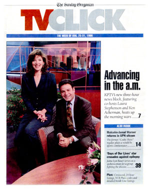

|
|
Magazine Articles
 |
| TV
Host November 9, 1995 Smooth Sailing Captain Lars Larson sounds like a character lifted from a Viking saga, or at least a Jack London novel. "Lars Larson, Nordic raider," jokes the man in command as he maneuvers his white sailboat next to OMSI's submarine USS Blueback on the Willamette. The riverside stop, within camera shot of KPTV's new building, is a fun break for the news team of Larson and Kim Singer. But the boat is more than recreation for Larson, it's also his residence. |
|  |
| TV
Host May 3, 1997 A Pair of Jokers:
Andy Carson & Tony Martinez |
| TV
Host May 2, 1998 Family Matters |
|
TV Host Seeking New Horizons |


This page last updated on August 17, 2025
|
Yesterday's KPTV Website design and content ©2003-2025 by Ron Dunevant, LLC unless otherwise noted. |